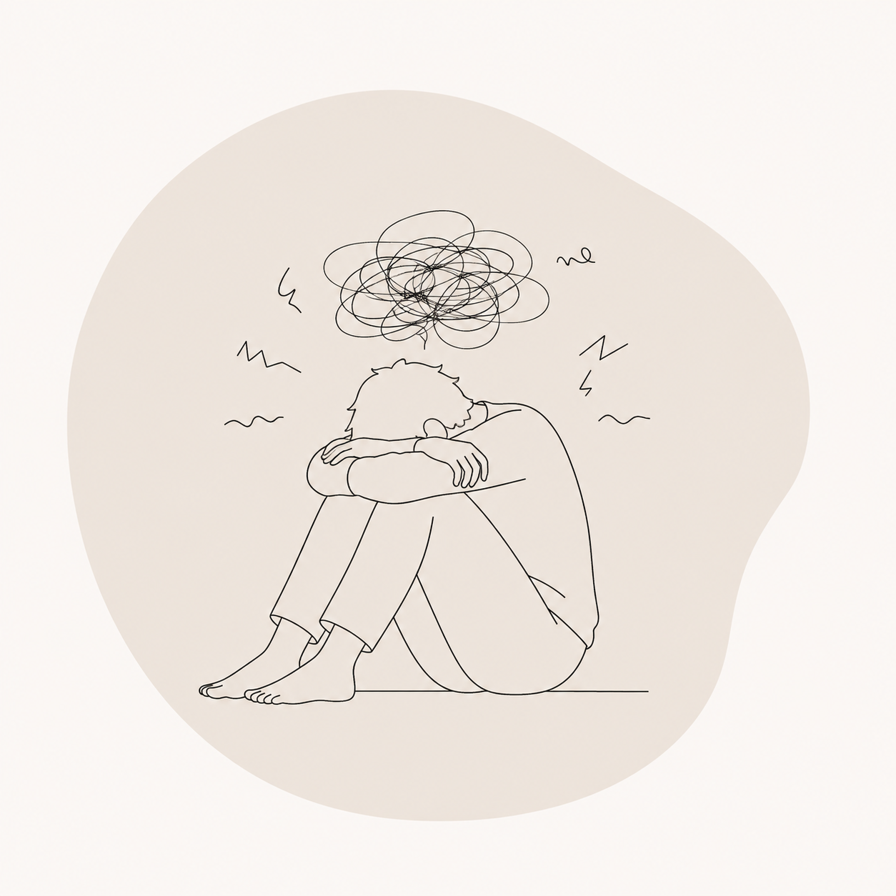

WHO I WORK WITH / 05
CHRONIC STRESS

Stress is a normal biological response that helps us meet life's demands. However, when stress becomes continuous and recovery is limited, the nervous system may struggle to return to a regulated state.
You might notice:
- Persistent muscle tension
- Fatigue
- Difficulty sleeping
- Irritability
- Brain fog
- Digestive problems
- Feeling constantly "on"
Our work focuses on understanding how stress is affecting both your body and mind while developing practical ways to support regulation, recovery and resilience.
BOOK A SESSION →